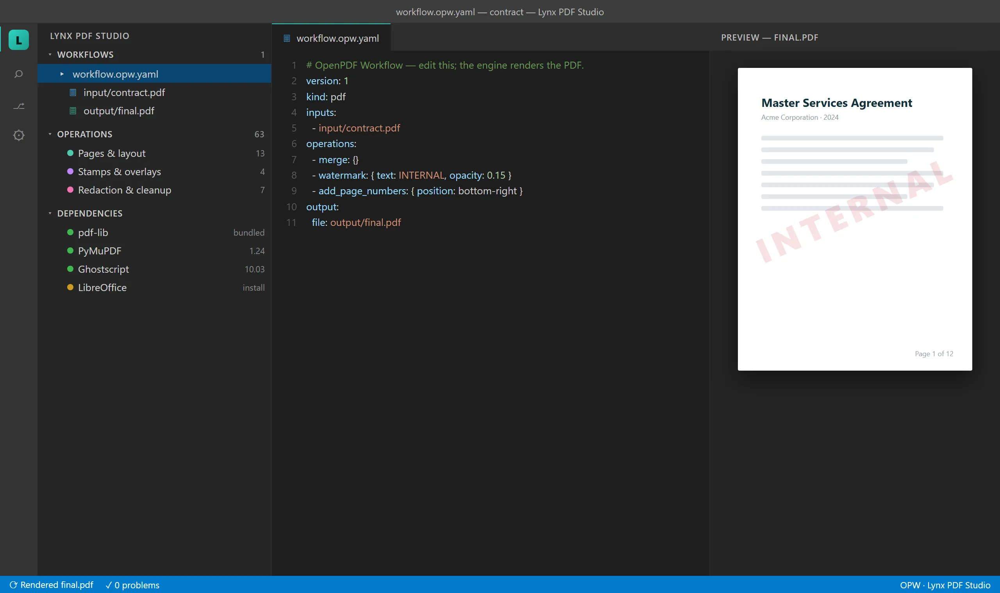

Never do the same document twice.Never upload one once.
Describe the job once in a small text file. A deterministic engine repeats it — on your machine. There is no server of ours.
# the source of truth — the PDF is a build artifact version: 1 kind: pdf inputs: - input/contract.pdf - input/appendix.pdf operations: - merge: {} - watermark: { text: INTERNAL, opacity: 0.15 } - add_page_numbers: { position: bottom-right } output: file: output/contract_final.pdf
The problem
None of it is hard. All of it is hours.
Merging the same reports every month. Filling the same form for the 40th client. Redacting SSNs before a file goes out. Pulling 500 completed forms into a spreadsheet. Today that work gets done one of three ways — and all three have a catch:
Clicking through a PDF editor
Fine for one document — and unrepeatable by the second. An editor is a good place to read a document; it's a terrible place to repeat a process.
Uploading to a free online tool
Which is a client's tax return on someone else's server.
A script somebody wrote once
Which only they understand — and which broke last quarter.
The fix
Describe the job once, in a file.
You write an OpenPDF Workflow: plain YAML, one line per step.
A deterministic engine renders it. Save the file and the PDF re-renders. Next
quarter it produces the same result from the same input — and git diff
says exactly what changed and who changed it.
- The workflow is the source of truth; the PDF is a build artifact.
- Git is your undo stack — every change is a reviewable diff.
- Repeating it is free: next week, next quarter, the next five hundred files.
One person sets the workflow up; the whole team — or a coding agent — reruns it forever.
inputs: "contracts/*.pdf" # was: one file operations: - watermark: { text: FINAL } output: file: "out/{stem}_final.pdf"
A glob in inputs runs the same workflow over every
matching file. One bad file is skipped and reported — not fatal.
Local by design
There is no server of ours.
No account, no upload service, no per-document pricing. The client's tax return, the signed contract, the medical intake form stay on the disk they're already on. The only network paths are ones you explicitly choose: offloading heavy OCR to a GPU box you own, or an AI operation pointed at a provider you pick — a local Ollama by default. That isn't a plan tier; it's the architecture — there is no server of ours to upload to.
Redaction that actually deletes
Find every SSN, email and account number by pattern and truly delete them — not a black rectangle over text that's still selectable underneath. Rasterize for the safest possible output.
Read the trust model
What's protected, what data can leave your machine and exactly what gates it, and how this website itself behaves: the trust page.
The vocabulary
80 operations, one grammar.
Every operation is one line in the same declarative shape — from merge to redaction to form filling. Browse the full operations reference.
Pages & layout
merge · split · split_invoices · crop · n_up · booklet …
Forms
create_form · fill_form · extract_form · flatten …
Redaction & cleanup
redact · auto_redact · sanitize · ocr · extract_js …
Stamps & overlays
watermark · stamp · annotate · add_page_numbers …
Convert to PDF
markdown_to_pdf · html_to_pdf · url_to_pdf · office_to_pdf …
Convert from PDF
pdf_to_markdown · pdf_to_docx · pdf_to_xlsx · pdf_to_html …
Document intelligence (AI)
summarize · translate · semantic_search
Optimize & archival
compress · repair · recolor (dark mode) · pdf_to_pdfa …
And five more categories
metadata & bookmarks · extraction · attachments · encryption · signatures
Flagship
The whole form lifecycle.
Make a fillable form, fill it a hundred times, and read every completed copy back into a spreadsheet — all from workflow files.
create_form
Write the form in Word or Markdown, type [[check]] and
[[text]] where the fields belong, and get a real fillable
AcroForm PDF. Verified on a 117-field, 4-page accounting-firm tax worksheet.
fill_form
Twelve real government forms ship already mapped: DS-11, DS-82, 1040, Schedule C, Schedule SE, W-9, W-8BEN, W-4, W-7, 1099-NEC, I-9, I-765. Your details live in one local YAML — or your existing CSV — and the same record fills any of them.
extract_form
Point at a folder of 500 filled PDFs; each is identified, read, and written out as JSON and CSV. Re-run after more arrive and only the new ones are read.
Agent-native
Works with any AI coding agent — online or offline.
Claude Code, Copilot, Cursor, Gemini, or a fully local agent: a bundled MCP server and a generated project guide teach any of them to author workflows for you.
Your coding agent never processes the PDF — it only creates and updates the workflow file. The document never enters the model's context. You review the diff before anything runs, and a fixed, deterministic engine on your machine does the actual work. AI operations like summarize and translate, if you enable them, go to the provider you chose — local by default.
Point your agent at pdf.lynxdi.com/llms.txt for a
machine-readable overview and the full operation reference in Markdown.

Rendering built from the extension's actual interface components.
Get started
Install in two steps.
Lynx PDF Studio runs inside Visual Studio Code — a free download. You don't need to be a developer, and you don't need to already use it: treat it as the free app that hosts the tool. Works on Windows, macOS, and Linux (VS Code 1.85 or later).
Get VS Code
Download it free from code.visualstudio.com and install it like any app.
Add Lynx PDF Studio
Install with one click (your browser will ask to open VS Code), get it from the Marketplace, or search “Lynx PDF Studio” in the Extensions view. Then Help → Get Started → Lynx PDF Studio walks you through your first render in four steps.
Questions
FAQ
Is it free? Can I use it for work?
Yes. Free to install and use for its intended purpose, including at work — no tiers, no account, no per-document pricing.
Do my PDFs get uploaded anywhere?
No. Documents are processed on your machine; there is no server of ours to upload to. The only network paths are ones you explicitly choose — like an AI operation pointed at a provider you pick, or OCR offloaded to a GPU box you own. Details on the trust page.
Does the AI agent see my PDFs?
No. Coding agents only create and update the workflow file — the document never enters the model's context. A fixed local engine processes the PDF. AI operations you explicitly enable (summarize, translate) go to the provider you configure, which is a local model by default.
Which AI agents work with it?
Any MCP-capable coding agent, online or offline — Claude Code, GitHub Copilot, Cursor, Gemini, or a fully local agent. A generated project guide teaches the agent your workflow format.
Is it open source?
It's free, the workflow format spec is open, the source isn't — for now.
Does it work offline?
Yes — all PDF processing runs locally and needs no network. Anonymous usage telemetry follows VS Code's telemetry setting (off means nothing is sent), and only operations that explicitly fetch URLs go online.
Windows, macOS, or Linux?
All three — anywhere VS Code runs. VS Code 1.85 or later.
I don't use VS Code — can I still use this?
Yes. VS Code is just the free app that hosts the tool; you install it once like any other application. You don't need to be a developer — if you can edit a small text file, you can run a workflow.
Which forms can it fill?
Twelve real government forms ship pre-mapped — DS-11, DS-82, 1040, Schedule C, Schedule SE, W-9, W-8BEN, W-4, W-7, 1099-NEC, I-9, I-765 — and it can fill any fillable PDF, create new fillable forms from Word or Markdown, and read completed forms back out to CSV.
Where do I get help?
Open an issue at github.com/LynxDI/pdf-studio/issues or email info@lynxdi.com.